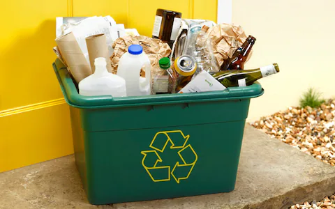

Green is the new Black
Making our planet more healty every day.
This webpag e is used to show future generatons a more sustatinable lifestyle and create a better envorment for future generations. We intent to change the planet in a possitve way and need to start thinking for others, future generatios and the genrations after that.
To create a more sustanable planet we need to ensure we are recycling our goods, If we get cardboard, rather than throwing it inot the black bin we sould recycle it properly. This is the first and one of the most vital steps of ensuring that we keep a sustanable enviroment. Recylcing can prevent things like plastic entering our oceans and killing our endangered creatures.
You can recylce at any nearby centere, or using your own house bins, when recyling at home you should avoid using the black bin unessecry as this should be used to items that can't be recylcled like food waste, and plastics. When visting a recyle centere or a "tip" there will be signs showing you what itmes can go into certain skip

Creating a cleaner enviroment is easier said than done. It's easy for me to sit here and type stop driving your car, walk more and eat more benifical foods. But that can all seem duanting at first, you should start by thinking of it as a hobby and then moving up. every now and then do a walk instead of a drive to the local stops or walk to work every now and then.